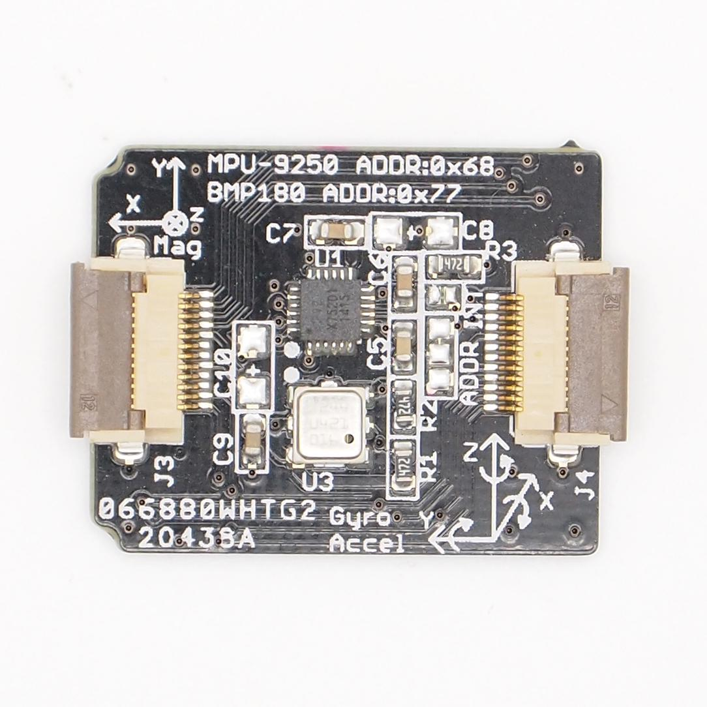
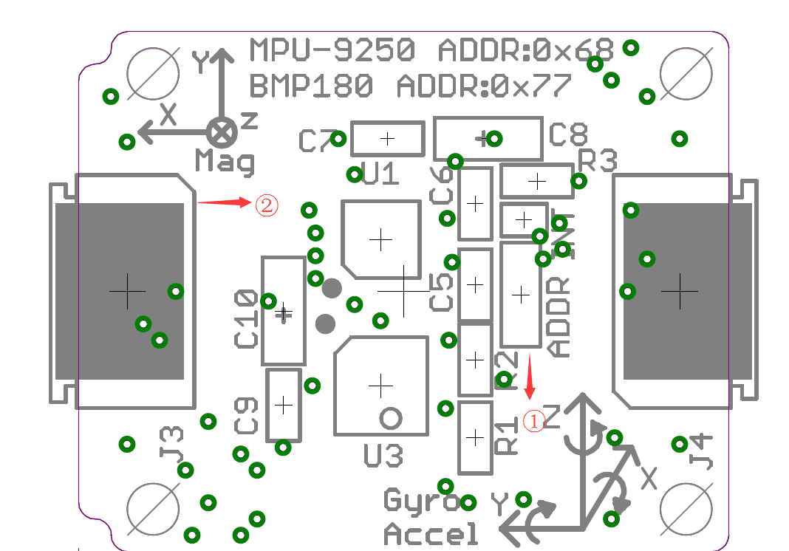
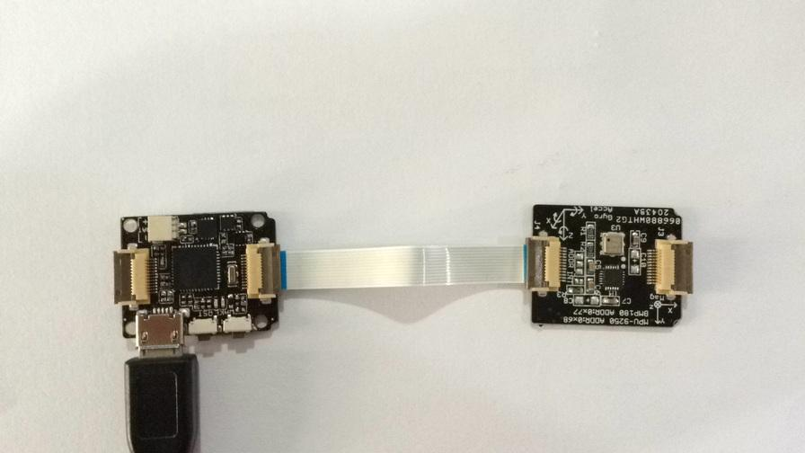
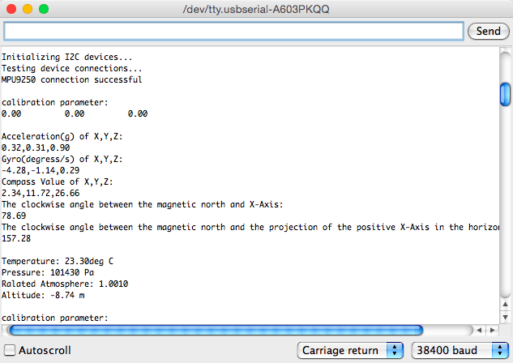
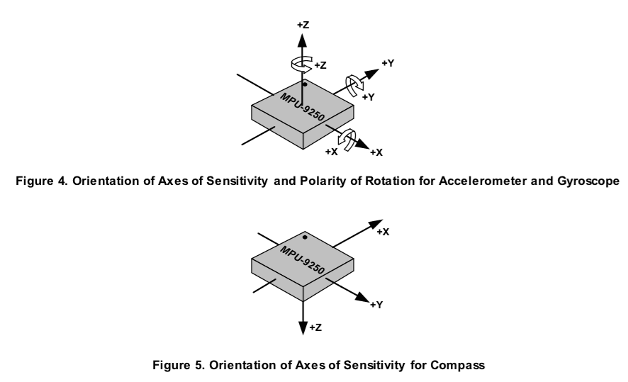

Xadow - IMU 10DOF
Xadow - IMU 10DOF is a combination of Xadow - IMU 9DOF and Xadow - Barometer BMP180.This module is base on MPU-9250 and BMP180, the MPU-9250 is a 9-axis MotionTracking device that combines a 3-axis gyroscope, 3-axis accelerometer, 3-axis magnetometer and a Digital Motion Processor(DMP), and BMP180 is a high precision,ultra-low power digital pressure sensors for consumer applications.This module is very suitable for the application of smartphones, tablets and wearable devices

Specifications
- I2C interface
- MPU-9250 I2C address selectable
- Low Power Consumption
- 400kHz Fast Mode I2C for communicating with all registers
- Digital-output X-, Y-, and Z-Axis angular rate sensors (gyroscopes) with a user-programmable full-scale range of ±250, ±500, ±1000, and ±2000°/sec
- Digital-output 3-Axis accelerometer with a programmable full scale range of ±2g, ±4g, ±8g and ±16g
- Digital-output magnetometer with a full scale range of ±4800uT
- Digital-output barometer with range of 300 ~ 1100hPa(+9000m ~ -500m relating to sea level)
- Dimensions: 25.43mm x 20.35mm
Interface Function

- ①：MPU-9250 I2C address select Pad(default 0x68)
- ②：12P FPC bottom contact
Usage
We will provide an example here to show you how to use this sensor.
Hardware Installation

Note: When connecting Xadow - IMU 10DOF to Xadow - Main Board, you should concern about the connection direction. The connection method is that the unfilled corner of one Xadow module need to connect to the right angle of another module(see four corners of each Xadow module).
Software Part
- 1) Download the library from https://github.com/Seeed-Studio/IMU_10DOF
- 2) Unzip it into the libraries file of Arduino IDE by the path
- 3) Open the code directly by the path: File -> Example -> IMU_10DOF_Test
- 4) Upload the code. Note that you should select the correct board type and COM port.
You can see :

Orientation of Axes
The diagram below shows the orientation of the axes of sensitivity and the polarity of rotation.

Resource
Copyright (c) 2008-2016 Seeed Development Limited (
www.seeedstudio.com /
www.seeed.cc)
This static html page was created from http://www.seeedstudio.com/wiki